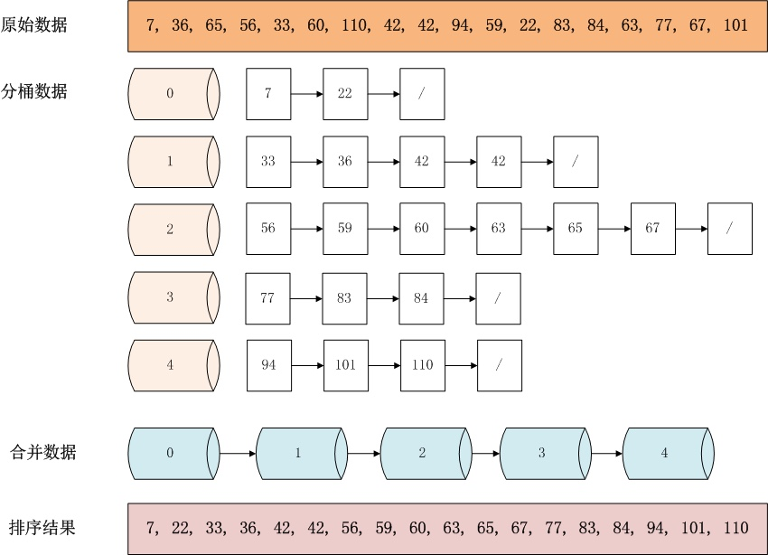

Bucket Sort (Distribution Sort)
1. 算法描述
桶排序是计数排序的升级版。它利用了函数的映射关系，高效与否的关键就在于这个映射函数的确定。
桶排序 (Bucket sort)的工作的原理：假设输入数据服从均匀分布，将数据分到有限数量的桶里，每个桶再分别排序（此处可以使用别的排序算法，最好是稳定的，比如插入排序等）。
- 设置固定空桶数
- 将数据放到对应的空桶中
- 将每个不为空的桶进行排序
- 拼接不为空的桶中的数据，得到结果
排序过程：

1
2
3
4
5
6
7
8
9
10
11
12
13
14
15
16
17
18
19
20
21
22
23
24
25
| 桶排序
原始数据
34 54 12 78 3 45 9
bucketCount = 2;
range = 78 / 2 + 1 = 40;
此处可以设置多个桶，如此这里换用
[34]
[34] [54]
[12 34] [54]
[12 34] [54 78]
[3 12 34] [54 78]
[3 12 34] [45 54 78]
[3 9 12 34] [45 54 78]
排序结果
[3 9 12 34 45 54 78]
|
2. 算法分析
最好情况(Best case)：当输入的数据可以均匀的分配到每一个桶中。
最差情况(Worst case)：当输入的数据被分配到了同一个桶中。
桶排序最好情况下使用线性时间O(n)，桶排序的时间复杂度，取决与对各个桶之间数据进行排序的时间复杂度，因为其它部分的时间复杂度都为O(n)。很显然，桶划分的越小，各个桶之间的数据越少，排序所用的时间也会越少。但相应的空间消耗就会增大。
所以，为了使桶排序更加高效，我们需要做到这两点：
- 在额外空间充足的情况下，尽量增大桶的数量
- 使用的映射函数能够将输入的 N 个数据均匀的分配到 K 个桶中
桶排序利用函数的映射关系，减少了几乎所有的比较工作。实际上，桶排序的f(k)值的计算，其作用就相当于快排中划分，已经把大量数据分割成了基本有序的数据块(桶)。然后只需要对桶中的少量数据做先进的比较排序即可。
对N个关键字进行桶排序的时间复杂度分为两个部分：
- 循环计算每个关键字的桶映射函数，这个时间复杂度是O(N)。
- 利用先进的比较排序算法对每个桶内的所有数据进行排序，其时间复杂度为 ∑ O(N*logN) 。其中 N 为第 i 个桶的数据量。
很显然，第(2)部分是桶排序性能好坏的决定因素。尽量减少桶内数据的数量是提高效率的唯一办法(因为基于比较排序的最好平均时间复杂度只能达到O(N*logN)了)。因此，我们需要尽量做到下面两点：
- 映射函数f(k)能够将N个数据平均的分配到M个桶中，这样每个桶就有[N/M]个数据量。
- 尽量的增大桶的数量。极限情况下每个桶只能得到一个数据，这样就完全避开了桶内数据的“比较”排序操作。 当然，做到这一点很不容易，数据量巨大的情况下，f(k)函数会使得桶集合的数量巨大，空间浪费严重。这就是一个时间代价和空间代价的权衡问题了。
对于N个待排数据，M个桶，平均每个桶[N/M]个数据的桶排序平均时间复杂度为：
$O(N)+O(M*(N/M)log(N/M))=O(N+N(logN-logM))=O(N+NlogN-NlogM)$
当N=M时，即极限情况下每个桶只有一个数据时。桶排序的最好效率能够达到O(N)。
总结： 桶排序的平均时间复杂度为线性的O(N+C)，其中C=N*(logN-logM)。如果相对于同样的N，桶数量M越大，其效率越高，最好的时间复杂度达到O(N)。 当然桶排序的空间复杂度 为O(N+M)，如果输入数据非常庞大，而桶的数量也非常多，则空间代价无疑是昂贵的。此外，桶排序是稳定的。
3. 映射函数
1. 桶排序映射函数和哈希表哈希函数的区别：
桶排序的映射函数类似哈希表中的哈希函数，但是不完全一致，差别在下面：
- 哈希函数映射所有的元素，但是不保证每个桶之间是顺序的，即前面的桶的元素不都比后面的小；
- 桶排序中则要顾及这一点，前面桶就要存储较小的数；
- 两者都是分布越均匀越好。
2. 计数排序、基数排序和桶排序的区别：
Counting Sort:数字范围小，直接根据数字进行排序，辅助数组 C 中记录小于等于某个数字的元素个数；
Radix Sort:数字范围大，通过从低到高对每个数字进行 Counting Sort，对于 n 位数字，经过 n 轮比较后，得到的最终结果就是最终有序序列；
Bucket Sort: 数字范围大，通过映射函数将数字尽量均匀的映射到各个桶中，之后每个桶使用稳定的 Insertion Sort 进行排序，最后按照桶的顺序将数字输出；前提是先遍历元素找出最大最小元素值，据此确定待排序元素的范围，根据这个范围和每个桶中存储元素的最大个数确定桶的个数，之后通过映射函数将元素归入桶中；
3. 桶排序映射函数思想如下，这个没有哈希函数那么多样化：
calculate bucketCount:
bucketCount = (maxValue - minValue) / bucketSize) + 1;
mapping function f(key):
index = (arr[i] - minValue) / bucketSize;
映射函数示例：
1
2
3
4
5
6
7
8
9
10
11
12
| Original data:
21, 34, 55, 24,27, 109
Assume bucketSize = 2
So, bucketCount = (109-21)/2 + 1 = 45
bucket[0]: (21-21)/2 = 0
bucket[1]: (34-21)/2 = 6
bucket[2]: (55-21)/2 = 17
bucket[3]: (24-21)/2 = 1
bucket[4]: (27-21)/2 = 3
bucket[5]: (109-21)/2 = 44
|
3. 算法实现(Java & C++)
1
2
3
4
5
6
7
8
9
10
11
12
13
14
15
16
17
18
19
20
21
22
23
24
25
26
27
28
29
30
31
32
33
34
35
36
37
38
39
40
41
42
43
44
45
46
47
48
49
50
51
52
53
54
55
56
57
| public class BucketSort implements IArraySort {
private static final InsertSort insertSort = new InsertSort();
@Override
public int[] sort(int[] sourceArray) throws Exception {
int[] arr = Arrays.copyOf(sourceArray, sourceArray.length);
return bucketSort(arr, 5);
}
private int[] bucketSort(int[] arr, int bucketSize) throws Exception {
if (arr.length == 0) {
return arr;
}
int minValue = arr[0];
int maxValue = arr[0];
for (int value : arr) {
if (value < minValue) {
minValue = value;
} else if (value > maxValue) {
maxValue = value;
}
}
int bucketCount = (int) Math.floor((maxValue - minValue) / bucketSize) + 1;
int[][] buckets = new int[bucketCount][0];
for (int i = 0; i < arr.length; i++) {
int index = (int) Math.floor((arr[i] - minValue) / bucketSize);
buckets[index] = arrAppend(buckets[index], arr[i]);
}
int arrIndex = 0;
for (int[] bucket : buckets) {
if (bucket.length <= 0) {
continue;
}
bucket = insertSort.sort(bucket);
for (int value : bucket) {
arr[arrIndex++] = value;
}
}
return arr;
}
private int[] arrAppend(int[] arr, int value) {
arr = Arrays.copyOf(arr, arr.length + 1);
arr[arr.length - 1] = value;
return arr;
}
}
|
1
2
3
4
5
6
7
8
9
10
11
12
13
14
15
16
17
18
19
20
21
22
23
24
25
26
27
28
29
30
31
32
33
34
35
36
37
38
39
40
41
42
43
44
45
46
47
48
49
50
51
52
53
54
55
56
57
58
59
60
61
62
63
64
| #include<iterator>
#include<iostream>
#include<vector>
using namespace std;
const int BUCKET_NUM = 10;
struct ListNode{
explicit ListNode(int i=0):mData(i),mNext(NULL){}
ListNode* mNext;
int mData;
};
ListNode* insert(ListNode* head,int val){
ListNode dummyNode;
ListNode *newNode = new ListNode(val);
ListNode *pre,*curr;
dummyNode.mNext = head;
pre = &dummyNode;
curr = head;
while(NULL!=curr && curr->mData<=val){
pre = curr;
curr = curr->mNext;
}
newNode->mNext = curr;
pre->mNext = newNode;
return dummyNode.mNext;
}
ListNode* Merge(ListNode *head1,ListNode *head2){
ListNode dummyNode;
ListNode *dummy = &dummyNode;
while(NULL!=head1 && NULL!=head2){
if(head1->mData <= head2->mData){
dummy->mNext = head1;
head1 = head1->mNext;
}else{
dummy->mNext = head2;
head2 = head2->mNext;
}
dummy = dummy->mNext;
}
if(NULL!=head1) dummy->mNext = head1;
if(NULL!=head2) dummy->mNext = head2;
return dummyNode.mNext;
}
void BucketSort(int n,int arr[]){
vector<ListNode*> buckets(BUCKET_NUM,(ListNode*)(0));
for(int i=0;i<n;++i){
int index = arr[i]/BUCKET_NUM;
ListNode *head = buckets.at(index);
buckets.at(index) = insert(head,arr[i]);
}
ListNode *head = buckets.at(0);
for(int i=1;i<BUCKET_NUM;++i){
head = Merge(head,buckets.at(i));
}
for(int i=0;i<n;++i){
arr[i] = head->mData;
head = head->mNext;
}
}
|